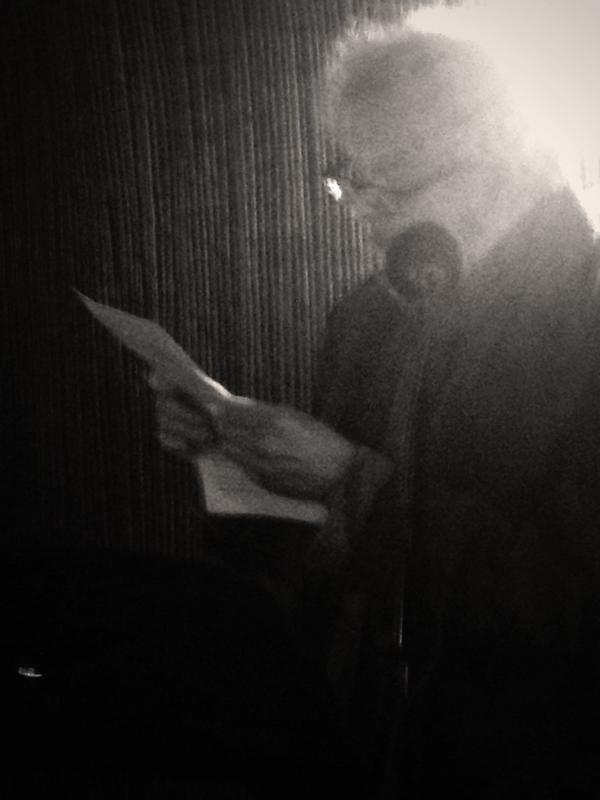

Saturday, October the 17th, 2015
back to: title, date or indexes

Here is a snap taken at Yada's restaurant in Peckham last night, where I did a reading as part of the LitCrawl festival. The photo was taken by one of my fellow-readers, Tony White, and also on the bill was Audrey Reynolds. I read a couple of stories and also took the opportunity to extol the many and various virtues of Mr Key's Shorter Potted Brief, Brief Lives, waving a copy of the book at the audience and reading a couple of extracts. This, for example, provoked pleasingly immoderate laughter:
Scott, George R. (British poultry expert, 20th century). Scott was the author of the 1934 book The Art Of Faking Exhibition Poultry. In the introduction, Socrates, Galileo, Voltaire, Nietzsche and D. H. Lawrence are each called to support his attack on the despicable practice, nowhere more vile than in “the pseudo-scientific Hogan cult, with all its blowsy jargon; its crapulous fundament of snide anatomy; its noisy and prolific drool of whim-wham”.